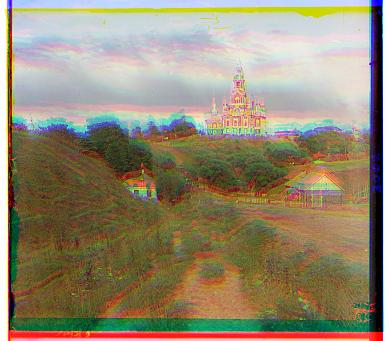
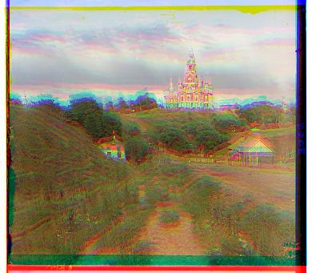

This image is a grayscale image (only one channel instead of rgb), with each of the 3 images
representing the blue, green, and red channels in a gray scale. Our job is to get all of these there grayscales and put them together to have a color image.
A naive attempt at this will look something like this:

What we do here is to that we just naively chunk the original image into 1/3 of the height and assign the colors respectively. We see that the images do not seem to align properly.
Thus, we need to align the three images together to get the correct color image. An easy way to start off would be to find the alignment that reduces the L2 loss since we know that
these colors will generally have pretty high correlation.
Of course, a natural problem that arises here is that after adding some sort of offset, the image dimensions will no longer match up. Thus, we need to find a way to account for this in our norm.
One way to do this is the apply the L2 norm on a smaller patch of the image such that after both the original and shifted dimensions include the entirety of this smaller patch. I arbitrarily chose the middle 40% of each dimension (meaning we only use 16% total).
Applying this technique to our image, we get the following output:
This image is a grayscale image (only one channel instead of rgb), with each of the 3 images
representing the blue, green, and red channels in a gray scale. Our job is to get all of these there grayscales and put them together to have a color image.
A naive attempt at this will look something like this:

What we do here is to that we just naively chunk the original image into 1/3 of the height and assign the colors respectively. We see that the images do not seem to align properly.
Thus, we need to align the three images together to get the correct color image. An easy way to start off would be to find the alignment that reduces the L2 loss since we know that
these colors will generally have pretty high correlation.
Of course, a natural problem that arises here is that after adding some sort of offset, the image dimensions will no longer match up. Thus, we need to find a way to account for this in our norm.
One way to do this is the apply the L2 norm on a smaller patch of the image such that after both the original and shifted dimensions include the entirety of this smaller patch. I arbitrarily chose the middle 40% of each dimension (meaning we only use 16% total).
Applying this technique to our image, we get the following output:
 Another way to do this is to use the Normalized Cross Correlation (NCC) loss. The output looks as follows:
Another way to do this is to use the Normalized Cross Correlation (NCC) loss. The output looks as follows:
 The problem here is that although this works on a smaller image like this ~(300 x 300 pixels), trying to brute force search this on every pixel will take too much time. Thus, we want to implement a pyramid based search to find the best alignment.
A pyramid based search starts with a much lower resolution version of the image (downsampled) and finds the best offset for this smaller version.
Then, we look at a larger version of it, finds an offset (based on the offset of the smaller version) and repeats this process until we reach the original resolution.
In this particular case, the pyramid search results in the same output without any significant speed up. However, consider a different image such as this image of 3 generations:
The problem here is that although this works on a smaller image like this ~(300 x 300 pixels), trying to brute force search this on every pixel will take too much time. Thus, we want to implement a pyramid based search to find the best alignment.
A pyramid based search starts with a much lower resolution version of the image (downsampled) and finds the best offset for this smaller version.
Then, we look at a larger version of it, finds an offset (based on the offset of the smaller version) and repeats this process until we reach the original resolution.
In this particular case, the pyramid search results in the same output without any significant speed up. However, consider a different image such as this image of 3 generations:

Here are the results of the pyramid search algorithm applied to various other images:

Monastery

Tobolsk
Cathedral

Emir
Italil

Church

Three Generations

Lugano

Melons
Lastochikino
Icon
Siren

Self Portrait

Harvesters